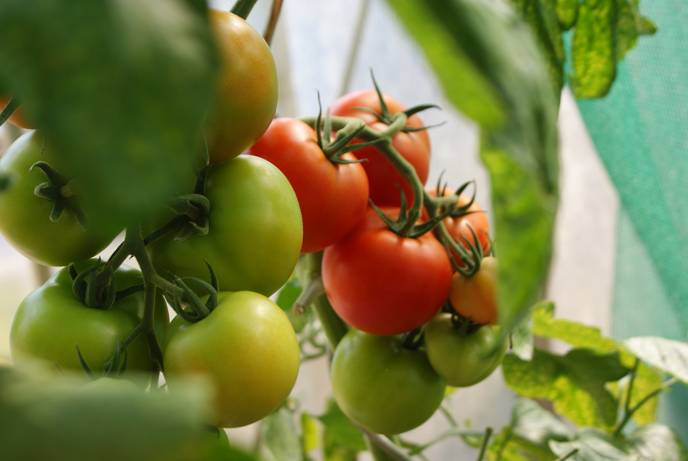

Succulents - What I Learned
They say it’s the easiest plant to start with, it would take an extra amount of “effort” to actually kill this plant. But I’m someone with a brown thumb, so obviously I had some doubts, and if I actually manage to kill this one, it will further decrease my self-esteem in raising plants (lol), well jokes aside...
Read more >>

My First Tomato Harvest!
After months of researching and going everywhere for solutions, it’s finally time for my first tomato harvest! Special thanks to my lovely readers for all the suggestions, tips etc. Here’s some photos of my freshly handpicked tomatoes in all its glory!! ❤️❤️❤️
Read more >>

Pet Friendly Houseplants
If it’s not obvious already from my blog header, I’m a cat person. I have three cats, Nutella, Skippy, and Vegemite, and of course, I want the best for them! But the bad news is, many common plants are not safe for either cats and dogs, certain plants are proven toxic when ingested. And I'm pretty sure my babies...
Read more >>